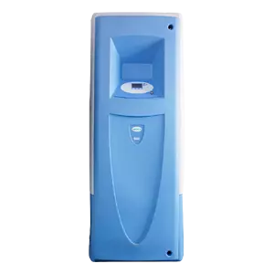
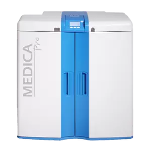
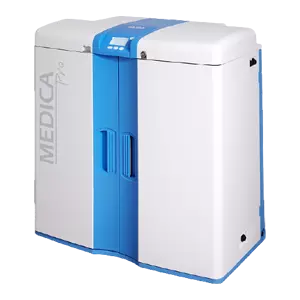
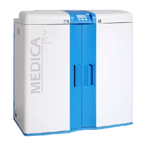
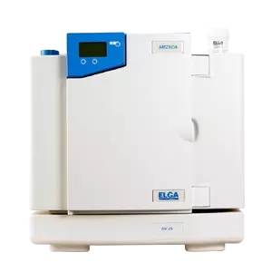
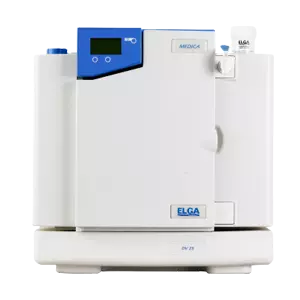

MEDICA R200
MEDICA R200 zasila duże zautomatyzowane analizatory diagnostyczne z gwarancją wysokiej wydajności. System ten dostarcza czystą wodę w standardzie CLRW do wielu analizatorów klinicznych w kilku laboratoriach, co czyni go wysoce elastycznym i niezawodnym.

MEDICA Pro-LPS
Zaprojektowany do dostarczania wody CLRW dla analizatorów klinicznych. Medica PRO-LPS jest idealnym wyborem, gdy wymagana jest woda o wysokiej czystości po wstępnym oczyszczaniu. Dozuj wodę klasy CLRW z szybkością do 4 litrów/ min. Pro-LPS może dostarczać wodę kilku analizatorom klinicznym w jednym laboratorium.

MEDICA Pro EDI 60/120
Seria MEDICA Pro została tak zaprojektowana, aby sprostać wymaganiom jakości wody w wysokowydajnych, pojedynczych lub kilu analizatorom do diagnostyki klinicznej o dużej objętości. MEDICA Pro EDI wykorzystuje technologię EDI" Pulse Technology" z zastosowaniem elektrodejonizacji (EDI). System dostarcza 2,5 l/min wody CLSI CLRW z wydajnością do 60 lub 120 l/h.

MEDICA Pro-R & Pro-RE
Seria MEDICA Pro została specjalnie zaprojektowana, aby spełnić wymagania jakościowe wysokowydajnych, pojedynczych lub kilku analizatorów do diagnostyki klinicznej o dużej objętości do standardu CLRW (Clinical Laboratory Reagent Water). MEDICA Pro-R ~ Zasilanie pod ciśnieniem do jednego lub wielu analizatorów wymagających stałej wody o wysokiej czystości. MEDICA Pro-RE ~ Ekonomiczne zasilanie pojedynczych lub wielu analizatorów, które są intensywnie eksploatowane.

MEDICA 7/15
Kompaktowa, dedykowana jednostka dostarczająca wodę klasy CLRW, MEDICA-R jest idealnym wyborem do użytku z pojedynczym analizatorem klinicznym do testów chemicznych lub immunologicznych. Zapewnia stały przepływ wody o wysokiej czystości, który jest utrzymywany przez recyrkulację przez żywice jonowymienne, promieniowanie UV i integralny mikrofiltr 0,2 µm. MEDICA-D ma te same funkcje co MEDICA-R, zapewniając wodę klasy CLRW dla pojedynczych analizatorów klinicznych. Ponadto MEDICA-D zawiera membranę odpowietrzającą, zapewniającą niezawodną specyfikację rozpuszczonego tlenu, która jest wymagana przez niektóre analizatory kliniczne. Ten produkt jest również dostępny w dwóch modelach zapewniających 7 lub 15 l/h.
